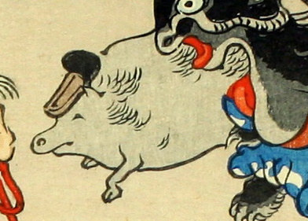

頭に浅沓をのせた獣のような化物。鼻が突き出ており、灰色の体は丸く、薄く毛が生えている。足にはひづめのようなものがみえる。
著作者：洒落斎芳幾（歌川芳幾）／出典：親書誌：U426_nichibunken_0075：滑稽倭日史記；コッケイヤマトシキ／日付：2007／資源識別子：U426_nichibunken_0075_0010_0000
Copyright (c)2010- International Research Center for Japanese Studies, Kyoto, Japan. All rights reserved.